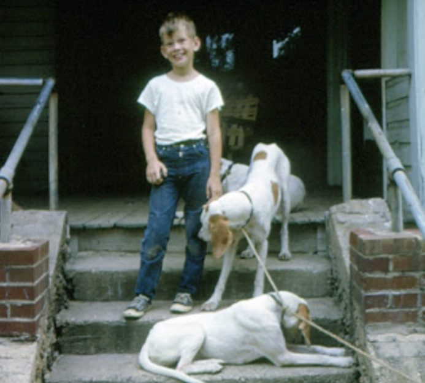
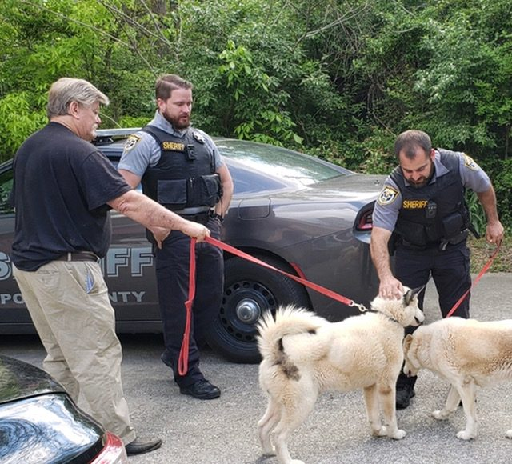
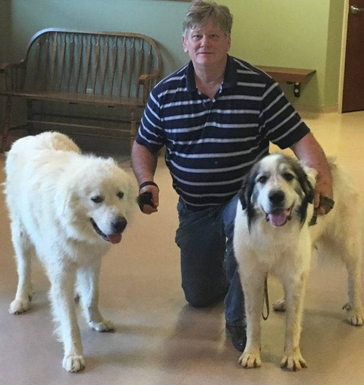

Betty and John Baker
Advocates. Sanctuary keepers. Dog people, maybe a little crazy, and deeply committed for thirty years.

A letter to our adopters, animal lovers, friends, and allies
For nearly three decades you have been part of our journey. A journey built on compassion, responsibility, and the belief that every animal deserves humane treatment, safety, and a loving home.
We began in 1996 in Ft. Lauderdale, volunteering for Abandoned Pet Rescue. In 2003 we moved to East Tennessee and found a county with no animal control. Dumping, neglect, and abuse were everywhere. So we became the ones who answer the calls.
Our home became a full scale rescue operation, at times caring for 50 to 60 animals at once. We did it without government funding, without grants, and without a safety net. Just adoption gifts and the kindness of supporters.
This was not a hobby. It was a calling.
Three decades of answering the call
-
1996
It starts in Ft. Lauderdale, volunteering for APR Abandoned Pet Rescue.
-
2003
We move to East Tennessee and find a county with no animal control. The calls start coming. We answer.
-
2003 to 2021
More than 1,600 dogs and many cats rescued and rehomed. Our home runs as a full rescue, often 50 to 60 animals at a time.
-
2024
After thirty years, we make the hardest decision of our lives and end intake. The toll had become unsustainable.
-
Today
Baker Bridge Rescue serves as an advocacy and sanctuary organization. Eleven residents. One mission, in a new form.


The realities of rescue work
Rescue becomes part of your identity. The adrenaline of the call. The urgency of saving a life. The eyes of an animal who needs you. And it asks for everything.
The time
One animal is a 24 hour responsibility. Dozens means you are never off. Every call, every emergency, every adopter who needs guidance. You answer, because the animals depend on you.
The body
Sleepless nights. Barking, cleaning, feeding, rotating crates. Never leaving home together. Rescue demands stamina, and stamina gets harder with time.
The money
Vet bills, medications, food, heartworm treatment, broken legs, mange, chewed furniture. Rescue is not profitable. It is sacrificial.
The heart
Compassion fatigue is real. Joy, heartbreak, anger, hope. Matching a dog with the perfect family is a small miracle, but some animals wait months or years.
We are not quitting rescue. We are transitioning. We continue to help, advise, volunteer, and advocate while caring for the animals still with us.
Our stance is simple
- Only legitimate, ethical breeders. No backyard breeders.
- No chains. No neglect. No abuse.
- Spay and neuter, always.
- Humane treatment in every home.
Some rescues collaborate beautifully. Others compete or put recognition ahead of animal welfare. That hurts legitimate rescuers, and it makes advocacy more important than ever.

We could not have done it alone
Rescue Riders LLC
Compassionate, pet friendly transport that carried our dogs to their new families across the Northeast.
Dixie Day Spay
Affordable spay and neuter services in Cleveland, and a true partner in preventing suffering before it starts.
Dr. Sanders, Keith Street Animal Clinic
Through broken legs, gunshot wounds, heartworm, and everything in between.
Thank you for adopting, supporting, and believing in rescue.
May your beloved pets bring you years of joy, companionship, and unconditional love. And please, always spay and neuter your pets.
With gratitude, Betty and John
Baker Bridge Rescue, proudly serving as an advocacy and sanctuary organization